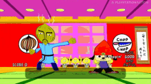
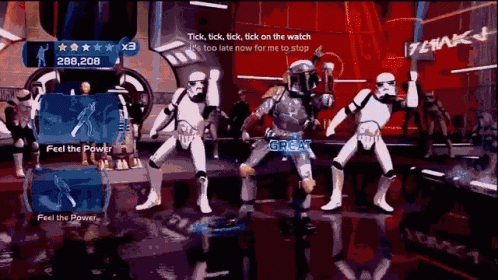

Rhythm game, or rhythm action,[1][2] is a subgenre of action game that challenges a player's sense of rhythm.[3] The genre includes dance games such as Dance Dance Revolution and music-based games such as Donkey Konga and Guitar Hero.[3] Games in the genre challenge the player to press buttons at precise times: the screen shows which button the player is required to press, and the game awards points both for accuracy and for synchronization with the beat.[3] The genre also includes games that measure rhythm and pitch, in order to test a player's singing ability,[4][5] and games that challenge the player to control their volume by measuring how hard they press each button.[6] While songs can be sight read,[7] players usually practice to master more difficult songs and settings.[8] Certain rhythm games offer a challenge similar to that of Simon, in that the player must watch, remember, and repeat complex sequences of button-presses.[9] Rhythm-action can take a minigame format with some games blending rhythm with other genres or entirely comprising minigame collections.[10][11][12] In some rhythm games, the screen displays an avatar who performs in reaction to the player's controller inputs.[3] However, these graphical responses are usually in the background,[6] and the avatar is more important to spectators than it is to the player.[4] In single-player modes, the player's avatar competes against a computer-controlled opponent, while multiplayer modes allow two player-controlled avatars to compete head-to-head.[3] The popularity of rhythm games has created a market for speciality input devices.[3] These include controllers that emulate musical instruments, such as guitars, drums, or maracas.[13] A dance mat, for use in dancing games, requires the player to step on pressure-sensitive pads.[14] However, most rhythm games also support more conventional input devices, such as control pads.[15]